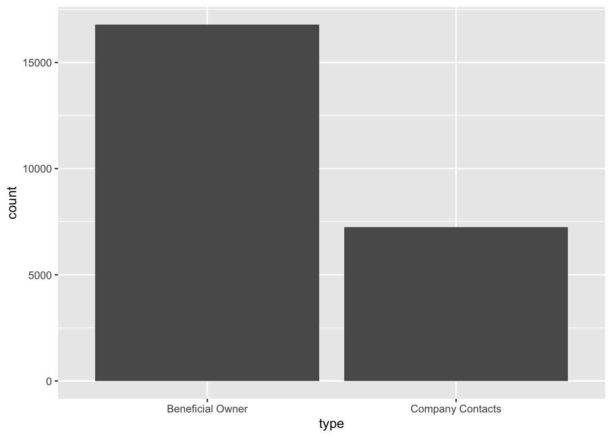
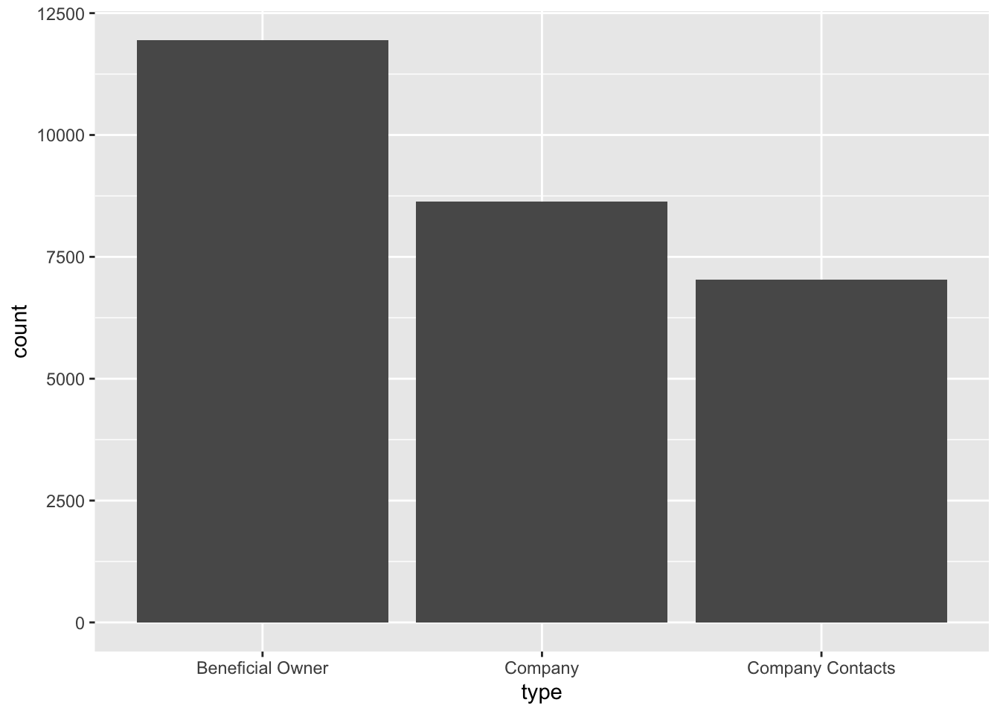
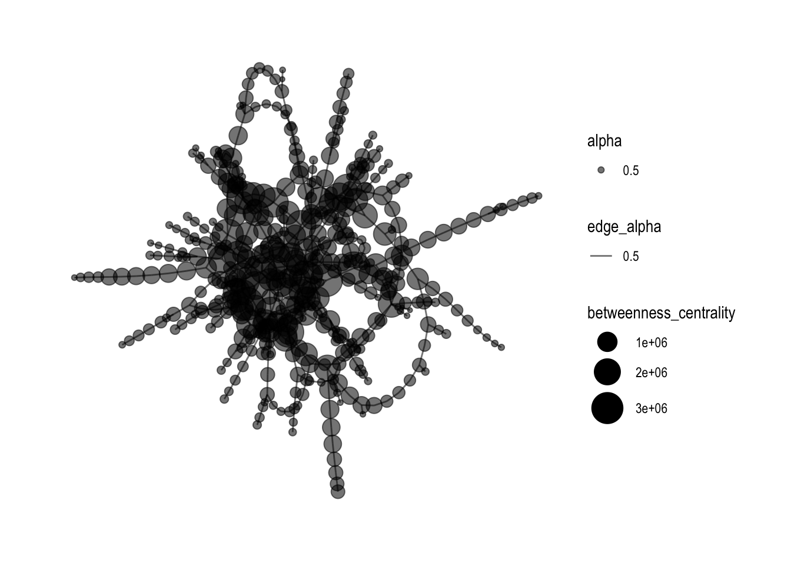
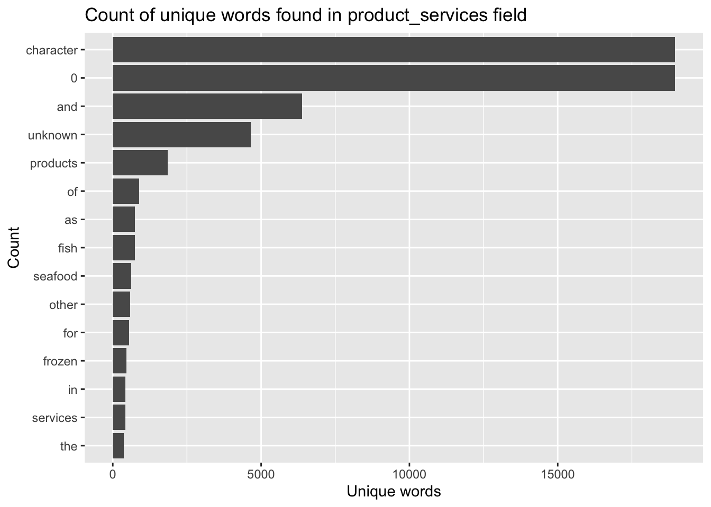
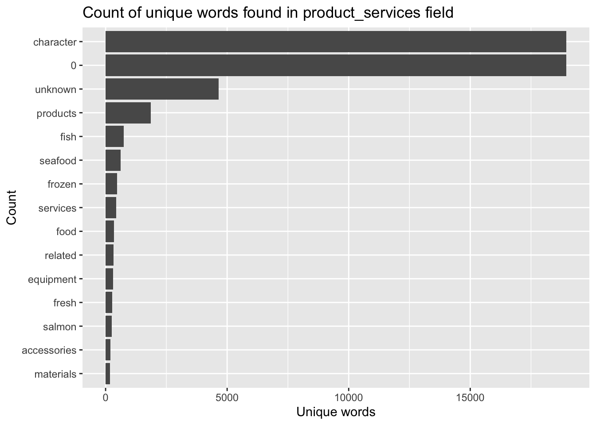

pacman::p_load(jsonlite, tidygraph, ggraph,
visNetwork, graphlayouts, ggforce,
skimr, tidytext, tidyverse)Take-home Exercise 3
Getting Started
The code chunk below will be used to install and load the necessary R packages to meet the data preparation, data wrangling, data analysis and visualisation needs.
Data Import
In the code chunk below, fromJSON() of jsonlite package is used to import MC3.json into R environment.
mc3_data <- fromJSON("data/MC3.json")The output is called mc3_data. It is a large list R object.
Data Wrangling
Extracting edges
The code chunk below will be used to extract the links data.frame of mc3_data and save it as a tibble data.frame called mc3_edges.
mc3_edges <- as_tibble(mc3_data$links) %>%
distinct() %>%
mutate(source = as.character(source),
target = as.character(target),
type = as.character(type)) %>%
group_by(source, target, type) %>%
summarise(weights = n()) %>%
filter(source!=target) %>%
ungroup()Extracting nodes
The code chunk below will be used to extract the nodes data.frame of mc3_data and save it as a tibble data.frame called mc3_nodes.
mc3_nodes <- as_tibble(mc3_data$nodes) %>%
mutate(country = as.character(country),
id = as.character(id),
product_services = as.character(product_services),
revenue_omu = as.numeric(as.character(revenue_omu)),
type = as.character(type)) %>%
select(id, country, type, revenue_omu, product_services)Initial Data Exploration
Exploring the edges data
In the code chunk below, skim() of skimr package is used to display the summary statistics of mc3_edges tibble data frame.
skim(mc3_edges)| Name | mc3_edges |
| Number of rows | 24036 |
| Number of columns | 4 |
| _______________________ | |
| Column type frequency: | |
| character | 3 |
| numeric | 1 |
| ________________________ | |
| Group variables | None |
Variable type: character
| skim_variable | n_missing | complete_rate | min | max | empty | n_unique | whitespace |
|---|---|---|---|---|---|---|---|
| source | 0 | 1 | 6 | 700 | 0 | 12856 | 0 |
| target | 0 | 1 | 6 | 28 | 0 | 21265 | 0 |
| type | 0 | 1 | 16 | 16 | 0 | 2 | 0 |
Variable type: numeric
| skim_variable | n_missing | complete_rate | mean | sd | p0 | p25 | p50 | p75 | p100 | hist |
|---|---|---|---|---|---|---|---|---|---|---|
| weights | 0 | 1 | 1 | 0 | 1 | 1 | 1 | 1 | 1 | ▁▁▇▁▁ |
The report above reveals that there is not missing values in all fields.
In the code chunk below, glimpse() of DT package is used to display mc3_edges.
glimpse(mc3_edges)Rows: 24,036
Columns: 4
$ source <chr> "1 AS Marine sanctuary", "1 AS Marine sanctuary", "1 Ltd. Liab…
$ target <chr> "Christina Taylor", "Debbie Sanders", "Angela Smith", "Catheri…
$ type <chr> "Company Contacts", "Beneficial Owner", "Beneficial Owner", "C…
$ weights <int> 1, 1, 1, 1, 1, 1, 1, 1, 1, 1, 1, 1, 1, 1, 1, 1, 1, 1, 1, 1, 1,…ggplot(data = mc3_edges,
aes(x = type)) +
geom_bar()
Exploring the nodes data
In the code chunk below, skim() of skimr package is used to display the summary statistics of mc3_nodes tibble data frame.
skim(mc3_nodes)| Name | mc3_nodes |
| Number of rows | 27622 |
| Number of columns | 5 |
| _______________________ | |
| Column type frequency: | |
| character | 4 |
| numeric | 1 |
| ________________________ | |
| Group variables | None |
Variable type: character
| skim_variable | n_missing | complete_rate | min | max | empty | n_unique | whitespace |
|---|---|---|---|---|---|---|---|
| id | 0 | 1 | 6 | 64 | 0 | 22929 | 0 |
| country | 0 | 1 | 2 | 15 | 0 | 100 | 0 |
| type | 0 | 1 | 7 | 16 | 0 | 3 | 0 |
| product_services | 0 | 1 | 4 | 1737 | 0 | 3244 | 0 |
Variable type: numeric
| skim_variable | n_missing | complete_rate | mean | sd | p0 | p25 | p50 | p75 | p100 | hist |
|---|---|---|---|---|---|---|---|---|---|---|
| revenue_omu | 21515 | 0.22 | 1822155 | 18184433 | 3652.23 | 7676.36 | 16210.68 | 48327.66 | 310612303 | ▇▁▁▁▁ |
glimpse(mc3_nodes)Rows: 27,622
Columns: 5
$ id <chr> "Jones LLC", "Coleman, Hall and Lopez", "Aqua Advance…
$ country <chr> "ZH", "ZH", "Oceanus", "Utoporiana", "ZH", "ZH", "Rio…
$ type <chr> "Company", "Company", "Company", "Company", "Company"…
$ revenue_omu <dbl> 310612303, 162734684, 115004667, 90986413, 81466667, …
$ product_services <chr> "Automobiles", "Passenger cars, trucks, vans, and bus…ggplot(data = mc3_nodes,
aes(x = type)) +
geom_bar()
Initial Network Visualisation and Analysis
Building network model with tidygraph
id1 <- mc3_edges %>%
select(source) %>%
rename(id = source)
id2 <- mc3_edges %>%
select(target) %>%
rename(id = target)
mc3_nodes1 <- rbind(id1, id2) %>%
distinct() %>%
left_join(mc3_nodes,
unmatched = "drop")mc3_graph <- tbl_graph(nodes = mc3_nodes1,
edges = mc3_edges,
directed = FALSE) %>%
mutate(betweenness_centrality = centrality_betweenness(),
closeness_centrality = centrality_closeness())mc3_graph %>%
filter(betweenness_centrality >= 100000) %>%
ggraph(layout = "fr") +
geom_edge_link(aes(alpha=0.5)) +
geom_node_point(aes(
size = betweenness_centrality,
colors = "lightblue",
alpha = 0.5)) +
scale_size_continuous(range=c(1,10))+
theme_graph()
Text Sensing with tidytext
In this section, you will learn how to perform basic text sensing using appropriate functions of tidytext package.
Simple word count
The code chunk below calculates number of times the word fish appeared in the field product_services.
mc3_nodes %>%
mutate(n_fish = str_count(product_services, "fish")) # A tibble: 27,622 × 6
id country type revenue_omu product_services n_fish
<chr> <chr> <chr> <dbl> <chr> <int>
1 Jones LLC ZH Comp… 310612303. Automobiles 0
2 Coleman, Hall and Lopez ZH Comp… 162734684. Passenger cars,… 0
3 Aqua Advancements Sashimi … Oceanus Comp… 115004667. Holding firm wh… 0
4 Makumba Ltd. Liability Co Utopor… Comp… 90986413. Car service, ca… 0
5 Taylor, Taylor and Farrell ZH Comp… 81466667. Fully electric … 0
6 Harmon, Edwards and Bates ZH Comp… 75070435. Discount superm… 0
7 Punjab s Marine conservati… Riodel… Comp… 72167572. Beef, pork, chi… 0
8 Assam Limited Liability … Utopor… Comp… 72162317. Power and Gas s… 0
9 Ianira Starfish Sagl Import Rio Is… Comp… 68832979. Light commercia… 0
10 Moran, Lewis and Jimenez ZH Comp… 65592906. Automobiles, tr… 0
# ℹ 27,612 more rowsTokenisation
The word tokenisation have different meaning in different scientific domains. In text sensing, tokenisation is the process of breaking up a given text into units called tokens. Tokens can be individual words, phrases or even whole sentences. In the process of tokenisation, some characters like punctuation marks may be discarded. The tokens usually become the input for the processes like parsing and text mining.
In the code chunk below, unnest_token() of tidytext is used to split text in product_services field into words.
token_nodes <- mc3_nodes %>%
unnest_tokens(word,
product_services)The two basic arguments to unnest_tokens() used here are column names. First we have the output column name that will be created as the text is unnested into it (word, in this case), and then the input column that the text comes from (product_services, in this case).
Now we can visualise the words extracted by using the code chunk below.
token_nodes %>%
count(word, sort = TRUE) %>%
top_n(15) %>%
mutate(word = reorder(word, n)) %>%
ggplot(aes(x = word, y = n)) +
geom_col() +
xlab(NULL) +
coord_flip() +
labs(x = "Count",
y = "Unique words",
title = "Count of unique words found in product_services field")
The bar chart reveals that the unique words contains some words that may not be useful to use. For instance “a” and “to”. In the word of text mining we call those words stop words. You want to remove these words from your analysis as they are fillers used to compose a sentence.
Removing stopwords
Lucky for use, the tidytext package has a function called stop_words that will help us clean up stop words.
Let’s give this a try next!
stopwords_removed <- token_nodes %>%
anti_join(stop_words)Now we can visualise the words extracted by using the code chunk below.
stopwords_removed %>%
count(word, sort = TRUE) %>%
top_n(15) %>%
mutate(word = reorder(word, n)) %>%
ggplot(aes(x = word, y = n)) +
geom_col() +
xlab(NULL) +
coord_flip() +
labs(x = "Count",
y = "Unique words",
title = "Count of unique words found in product_services field")